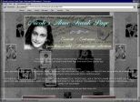
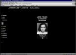
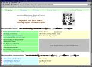
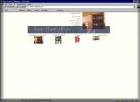
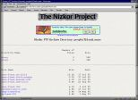
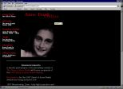
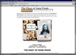

...wird weiter aktualisiert
 |
Nicole's Anne Frank Page. Nicole Caspari hat ein beachtliches Internetangebot über Anne Frank zusammengestellt. Inhaltlich und grafisch ein beeindruckendes Werk. |
 | Anne Frank Tagebuch Onlinehilfen Ein Unterrichtprojekt von Uta Hartwig. |
 | "Tagebuch der Anne Frank" - Arbeitsgruppen und Materialien Gymnasium Wildeshausen, Klasse 9b (Deutsch) Schuljahr 1997/98 Es wurde Porträts der Untergetauchten erarbeitet, der Alltag im Versteck nachempfunden und über Anne Beziehungen zu ihren Eltern refeltiert. Weiterhin findet man hier eine sehr ausführliche Linkliste und weitere Arbeiten aus dem Deutschunterricht. |
 | The Anne Frank House |
 | Anne Frank at the The Nizkor Project Auszüge aus dem Tagebuch, Zitate von Mies Giep, Lies und Mrs. de Wiek und Texte aus dem Usenet. |
 | Anne Frank Online die wohl umfangreichste Web Site zu Anne Frank, ihrem Leben und ihrem Tagebuch. Sehr viele Bilder und biographische Notizen, ebenso wie zahlreiche Hintergrundinformationen über die Authenzität und Entstehungsgeschichte ihres Tagebuchs. |
 | "The Diary of Anne Frank" Eine Broadway Produktion Hier findet man nicht nur Informationen über das Broadway Stück, Besetzungslisten, Kritiken etc, sondern auch einen sechsteiligen 'Study Guide' für Lehrer und Schüler. |